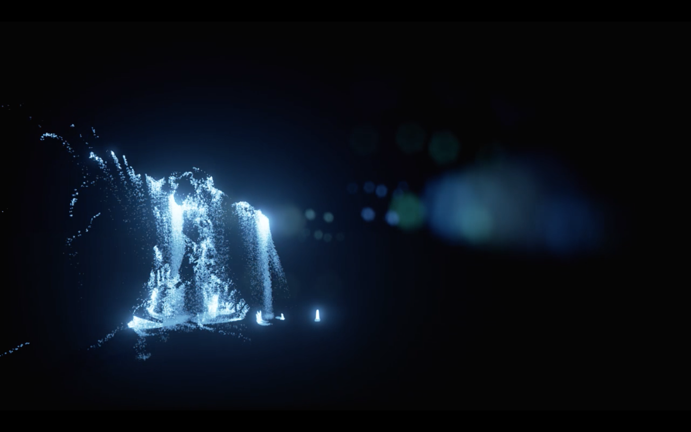
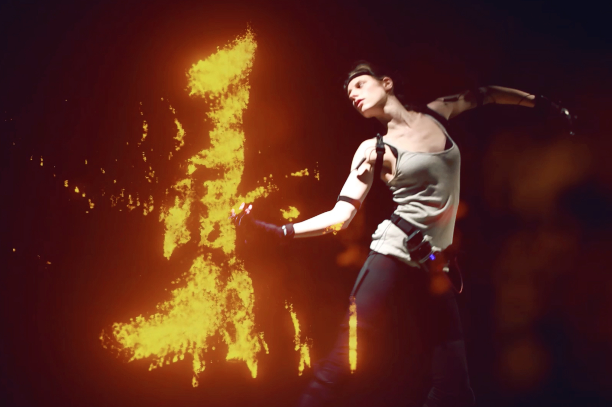
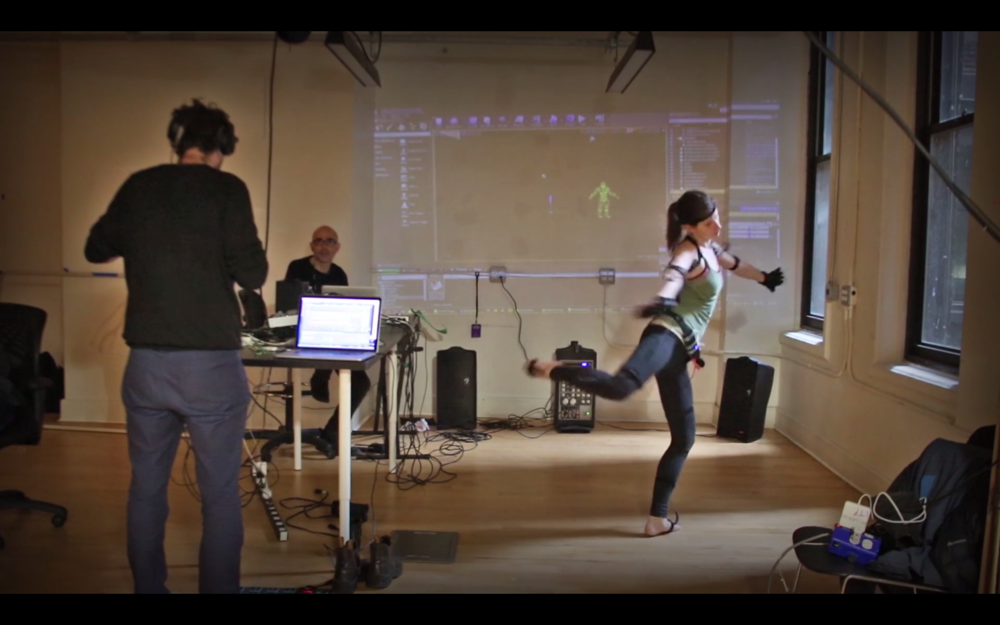
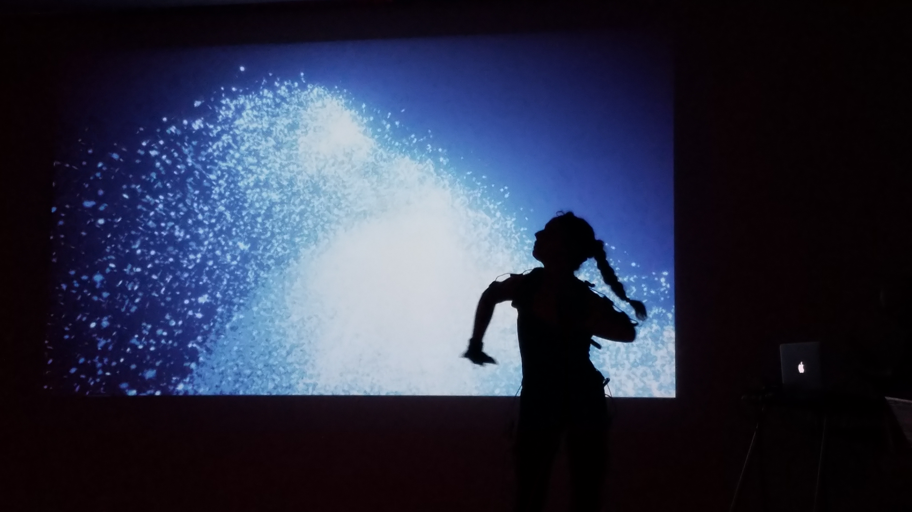

Aether
AETHER: A live motion capture dance performance at National Sawdust on Vimeo.
Aether is a live motion capture dance performance and VR experience, designed and choreographed from the ancestral use of sacred geometry and the four embodied elements: water, fire, earth and air. The dancers’ movements are tracked and translated to 3D avatars emitting different particle systems in real time, based on the visual properties and behavior of each element. With Aether, the artists seek to create an immersive live experience through movement, interactive 3D graphics and music, crafting a cohesive narrative that juxtaposes ancestral knowledge with cutting edge technology.
The project was developed using Unreal Game Engine to create the 3D live visuals and Perception Neuron suits to track the movements of the dancers. It was conceived as collaboration between students from the Interactive Telecommunications Program and Integrated Digital Media Program at NYU, and was included as a part of ITP’s Experiments in Storytelling research initiative supported by Google. The project has been showcased at National Sawdust, World Maker Faire, Pioneer Works and Dance on Camera festival at the Lincoln Center, among others.




AETHER - National Sawdust Teaser [Water] from Sergio Mora-Diaz on Vimeo.
AETHER - National Sawdust Teaser from Sergio Mora-Diaz on Vimeo.